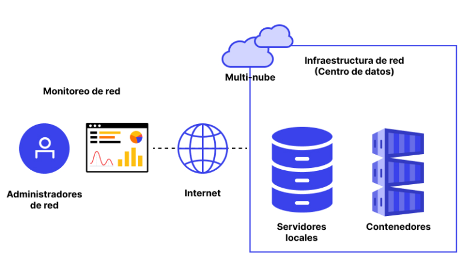

El proyecto consiste en el diseño e implementación de una solución robusta de Monitoreo de Infraestructura y Servicios para Chitech, utilizando una Raspberry Pi 4 como servidor central.
El objetivo es supervisar el rendimiento de la red (latencia, ancho de banda) y el estado de los equipos críticos (CPU, RAM) en tiempo real, con capacidad de generar alertas preventivas ante fallos. Esto se logra mediante un stack de contenedores Docker (Prometheus y Grafana) y diversos *exporters* de red.
El proyecto se gestiona bajo la metodología **Agile**, organizando el trabajo en **Sprints** (Semanas). Esto permite la **adaptación continua** ante los imprevistos de la red de Chitech y la **entrega de valor rápida** a través de iteraciones.
El seguimiento se realiza mediante el tablero **Trello** (Kanban).